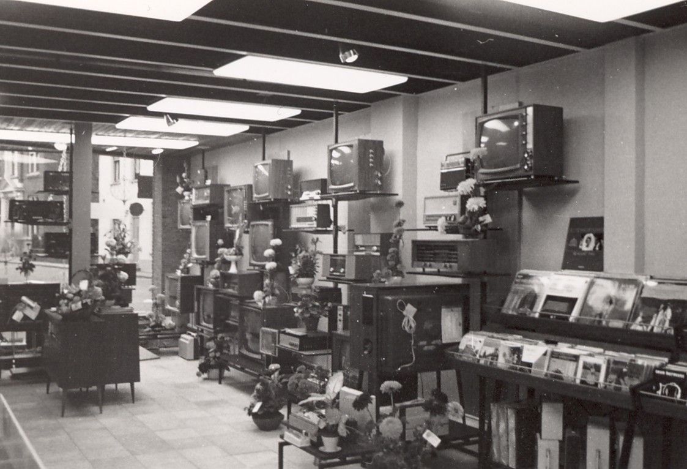
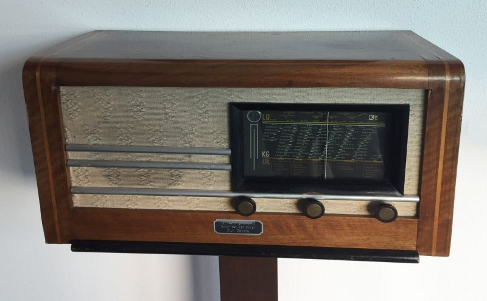
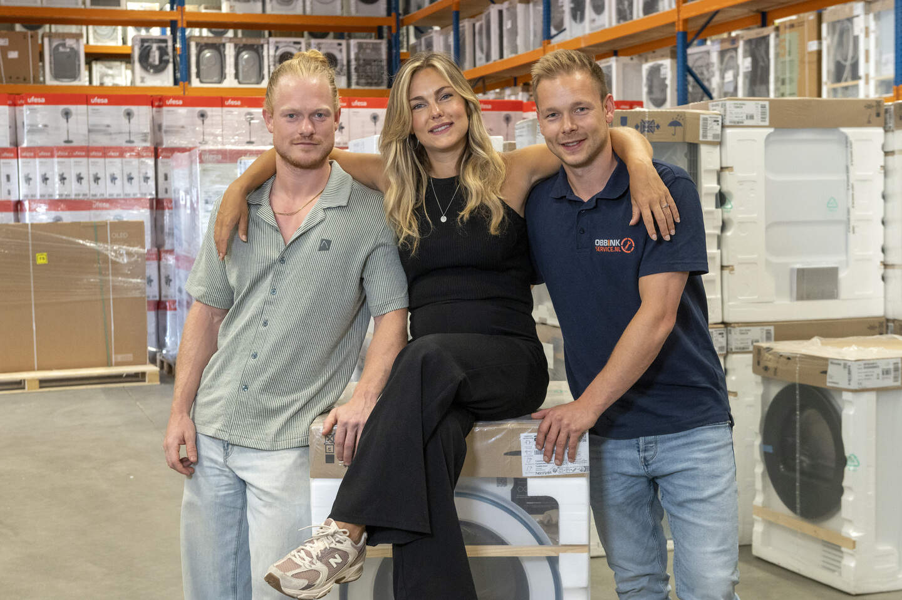

Over ons
De technische kracht achter Obbink.
De kracht van Obbink zit in de jarenlange passie voor techniek. Sinds 1934 is Obbink al bezig met techniek. Wat begon met radio’s en elektronica, groeide uit tot een organisatie met een sterke basis in reparatie, onderhoud, installatie en service. In al die jaren is Obbink zich blijven aanpassen aan veranderingen in de markt, zonder het vakmanschap en de persoonlijke betrokkenheid te verliezen. Juist die combinatie van ervaring, technische kennis en service maakt Obbink vandaag nog altijd sterk.

Sinds 1934
Onze historie
Sinds 1934 is Obbink verbonden met techniek. In de beginjaren lag de focus op radio en elektronica. Vanuit die basis ontstond een sterke traditie in reparatie, onderhoud en service. Door de jaren heen groeide Obbink mee met nieuwe technieken, producten en klantvragen, maar de liefde voor het vak is altijd gebleven.
Onze servicebeloften
Onze technische organisatie
Vandaag de dag is Obbink Service een moderne technische organisatie met eigen monteurs, planning, werkplaats en Service Center. Wij ondersteunen klanten met reparatie, installatie, onderhoud en technisch advies. Door praktijkervaring te combineren met actuele kennis kunnen wij snel schakelen en passende oplossingen bieden.
Vanuit ons Service Center in Lichtenvoorde bieden we technische ondersteuning in de Achterhoek.
Werken bij Obbink Service

VIERDE GENERATIE
De volgende generatie bouwt verder.
Vandaag staat de vierde generatie binnen het familiebedrijf klaar om Obbink verder te ontwikkelen. Ieder vanuit een eigen rol, maar met dezelfde basis: techniek, service, ondernemerschap en de bereidheid om te blijven veranderen.
Sinds 1934 verandert de techniek. De betrokkenheid blijft.
Thuis & zakelijk
Obbink Service werkt voor particulieren én zakelijke klanten. Van service aan huis tot ondersteuning voor bedrijven, winkels en professionele toepassingen: wij zorgen voor techniek die werkt. Juist doordat wij beide werelden kennen, kunnen we klanten breed ondersteunen met advies, installatie, onderhoud en service.

VAKKENNIS · VEILIGHEID · KWALITEIT
Kwaliteit en vakbekwaamheid
Technische service vraagt om kennis, veilig werken en actuele vakbekwaamheid. Deze organisaties en normen hebben ieder een eigen werkgebied.

Kiwa
Certificering en toetsing binnen technische vakgebieden.

VCA
Aandacht voor veiligheid, gezondheid en milieu op het werk.

InstallQ
Erkenningsregelingen voor technische installatiewerkzaamheden.

Techniek Nederland
Brancheorganisatie voor de technische sector.

Nationaal Reparateursregister
Register voor professionele reparateurs.
NEN
NEN 3140 gaat over veilig werken aan elektrische installaties en arbeidsmiddelen.
Erkenningen en certificeringen kunnen betrekking hebben op specifieke werkzaamheden, medewerkers of vakgebieden.